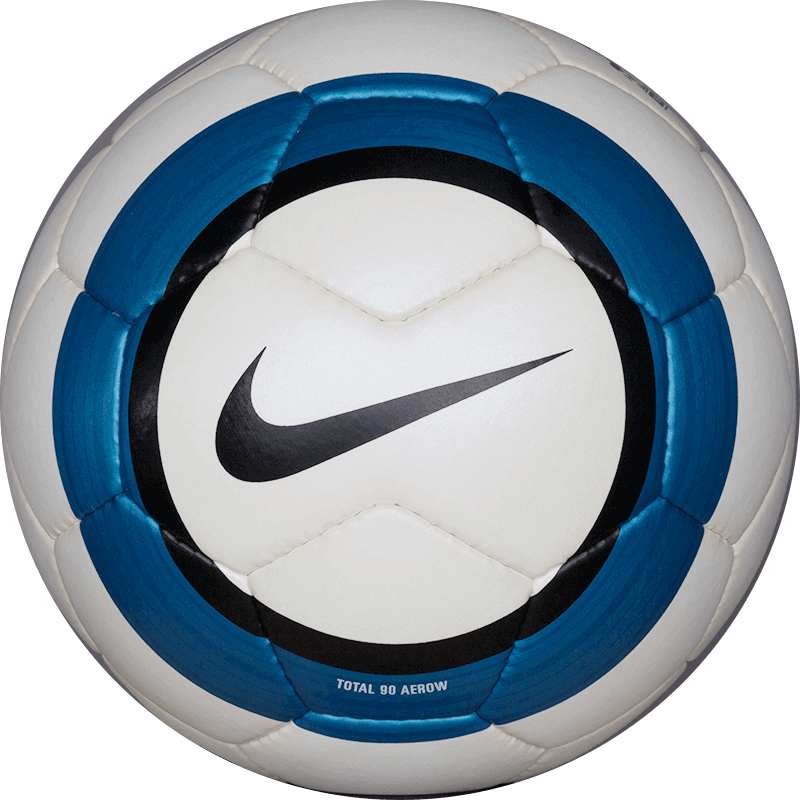
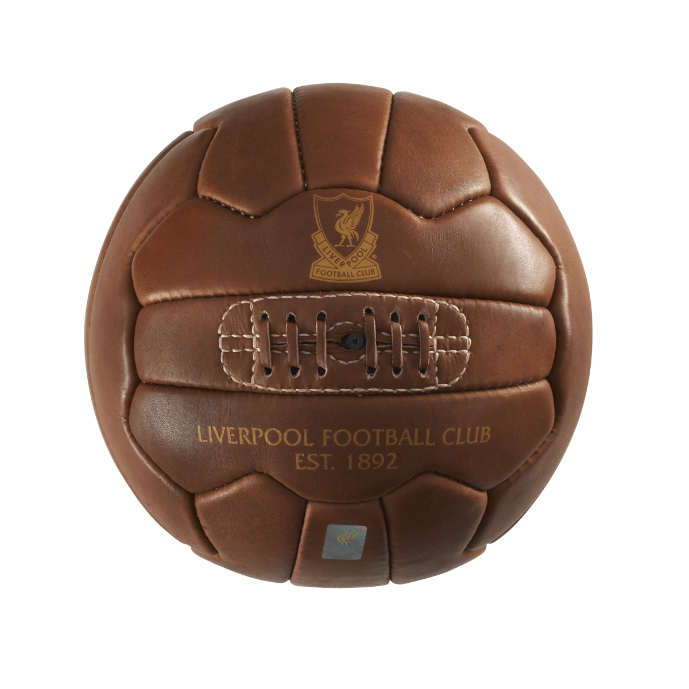

PRESENTACIÓN DE JH Mi nombre es Juan Cruz, tengo 25 años, y toda mi vida fui un fanático desmedido del fútbol, tanto jugando como consumiéndolo. Siempre me interesó conocer e informarme no solamente sobre selecciones nacionales, clubes, ligas y resultados de partidos, si no aprender mas allá de lo anterior, como por ejemplo sobre tácticas, alineaciones, cualidades y caracteristicas de cada futbolista, en qué clubes jugaron, pie hábil del mismo, si jugaba mejor por izquierda o derecha, si se destacaba por sus pases cortos o largos, tiros libres, remates al arco, movimientos defensivos, time-in tanto para quitar como para pasar la pelota, habilidad y agilidad, que botines tenían, y tantos rasgos más que me interesan a la hora de indagar cada día un poquito más, sobre este deporte que tanto me apasiona. En fin, JH es una selección de jugadores tanto actuales como históricos, de los que más me marcaron en ésta transición de aprendizaje constante sobre fútbol. Aquellos de los que disfruto/disfruté ver jugar a la pelota, por los que me reservaba 2 hs al día, sólo por que jugaba tal jugador. Cabe aclarar, que es una selección totalmente subjetiva, y está claro que faltan miles de cracks más, pero al siempre tener un favoritismo tan marcado por una posición en especial, que es la del enganche, el 10, el enlace, elegí aquellos jugadores que creía que tenían éstas caracteristicas o semejantes. Sin duda alguna, quiero destacar otras posiciones como la de defensor o arquero, como por ejemplo genios del fútbol como lo son Sergio Ramos, Dani Alves o Jordi Alba entre tantos de los actuales, y refiriéndo a los históricos, imposible no nombrar a Paolo Maldini, Fabio Cannavaro y Carles Puyol. Por parte de los arqueros actuales, Manuel Neuer me parece que encabeza ésta lista, seguido por Jan Oblak y Marc-andré ter Stegen, y hablando sobre los porteros históricos, sin lugar a duda el más destacado según mi experiencia, fue Iker Casillas, seguido por Gianluigi Buffon y Oliver Kahn.  